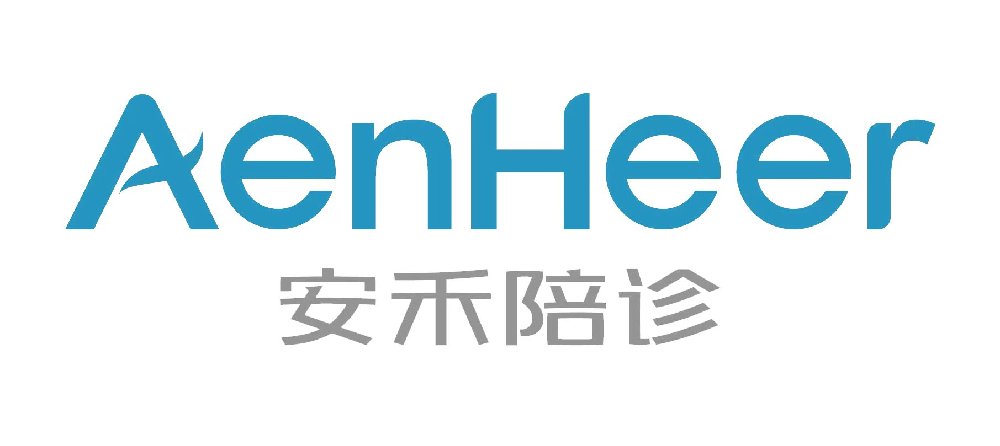

时间：2023-05-14 访问量：1202
伊戎陪诊，助您就医无忧！
我是伊戎陪诊的专职陪诊员，陪诊的经历发现“一些上了年纪的病人腿脚都不方便，自己排队的话要很久。而且医院采取网上预约挂号，他们弄不明白网上挂号如何操作，跑到医院发现已经没号了，白跑一趟。还有外地来的病人，不熟悉医院的情况，在检查室门口走来走去，就是找不到要去的地方，站在门口和我对视，这样病人很着急，我们也很为难。”因为我们陪诊人员对医院更加熟悉，可以大大缩短就医时间，提高就诊效率，解决了患者“就医难”的痛点。今天陪诊的叔叔是从河北邯郸来北京中日友好医院呼吸与危重症医学科做肺心病的复查，孩子最近不方便请假，找到我们。由于孩子不放心，让我们去车站接上叔叔，早上七点半我与叔叔在北京南站集合，坐地铁前往北京中日友好医院，到达医院后顺利取号，排队+候诊大约2小时，顺利问诊后，陪患者做了血常规、心电图、X光的检查。检查结果出来后找医生复诊，复诊的过程中全程记录医嘱以便患者的孩子对患者病情的了解，并陪同患者顺利开药。医院就诊结束后大约12点多，跟同叔叔在医院附近吃了一顿便餐，坐地铁顺利送到南站，祝愿叔叔早日康复。
科普分享|内容摘自三甲医院专家文章
肺源性心脏病
一、定义
肺源性心脏病(简称肺心病)主要是由于支气管-肺组织或肺动脉血管病变所致肺动脉高压引起的心脏病。根据起病缓急和病程长短，可分为急性和慢性两类。临床上以后者多见。本病发展缓慢，临床上除原有肺、胸疾病的各种症状和体征外，主要是逐步出现肺、心功能衰竭以及其他器官损害的征象。
二、病因
1.支气管、肺疾病
以慢支并发阻塞性肺气肿最为多见，其次为支气管哮喘、支气管扩张、重症肺结核、尘肺、慢性弥漫性肺间质纤维化、结节病、过敏性肺泡炎、嗜酸性肉芽肿等。
2.胸廓运动障碍性疾病
较少见，严重的脊椎后、侧凸、脊椎结核、类风湿性关节炎、胸膜广泛粘连及胸廓形成术后造成的严重胸廓或脊椎畸形，以及神经肌肉疾患如脊髓灰质炎。
3.肺血管疾病
罕见。累及肺动脉的过敏性肉芽肿病，广泛或反复发生的多发性肺小动脉栓塞及肺小动脉炎，以及原因不明的原发性肺动脉高压症，发展成肺心病。
三、症状
慢性肺源性心脏病是由于慢性支气管、肺、胸廓或肺动脉血管慢性病变所致的肺循环阻力增加、肺动脉高压、进而使右心肥厚、扩大，伴或不伴右心功能衰竭的心脏病。急性肺源性心脏病主要是由肺动脉主干或其主要分支突然栓塞，肺循环大部受阻，以致肺动脉压急剧增高、急性右心室扩张和右心室功能衰竭的心脏病。按其功能的代偿期与失代偿期进行分述。
1.肺、心功能代偿期(包括缓解期)
此期主要是慢性阻塞性肺疾病(简称慢阻肺)的表现。慢性咳嗽、咳痰、气急，活动后心悸、呼吸困难、乏力和劳动耐力下降。体检可有明显肺气肿征，听诊呼吸音减弱，偶有干、湿性啰音，下肢轻微水肿，下午明显，次晨消失。心浊音界常因肺气肿而不易叩出。心音遥远，但肺动脉瓣区可有第二心音亢进，提示有肺动脉高压。三尖瓣区出现收缩期杂音或剑突下示心脏搏动，多提示有右心肥厚、扩大。部分病例因肺气肿使胸膜腔内压升高，阻碍腔静脉回流，可见颈静脉充盈。又因膈下降，使肝上界及下缘明显地下移。
2.肺、心功能失代偿期(包括急性加重期)
本期临床主要表现以呼吸衰竭为主，有或无心力衰竭。
对症医院推荐（仅供参考）
广州医科大学附属第一医院
复旦排行：全国呼吸内科排行榜第1名
中日友好医院
复旦排行：全国呼吸内科排行榜第2名
四川大学华西医院
复旦排行：全国呼吸内科排行榜第3名
中国医学科学院北京协和医院
复旦排行：全国呼吸内科排行榜第4名
上海交通大学医学院附属瑞金医院
复旦排行：全国呼吸内科排行榜第5名
 4008382558
4008382558